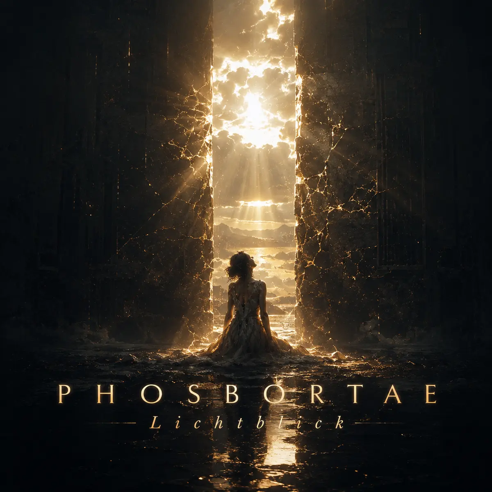
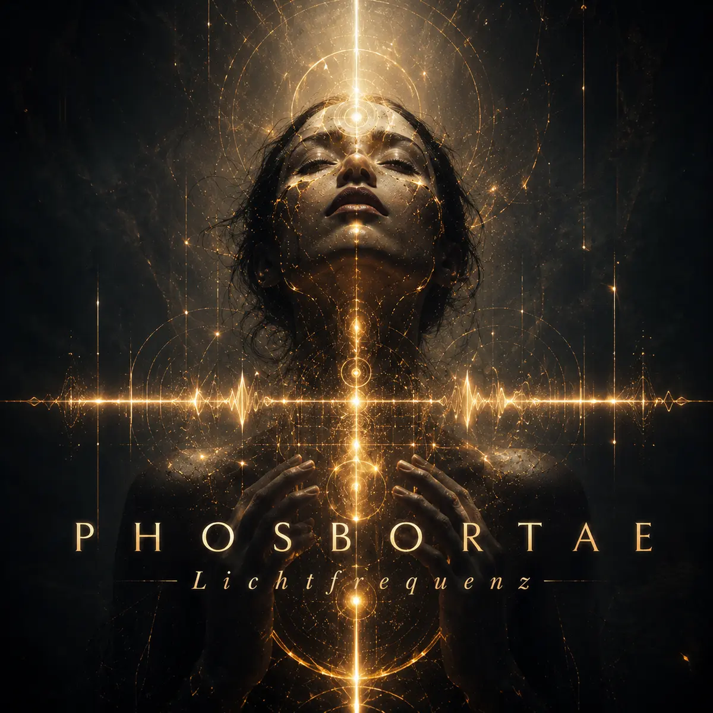
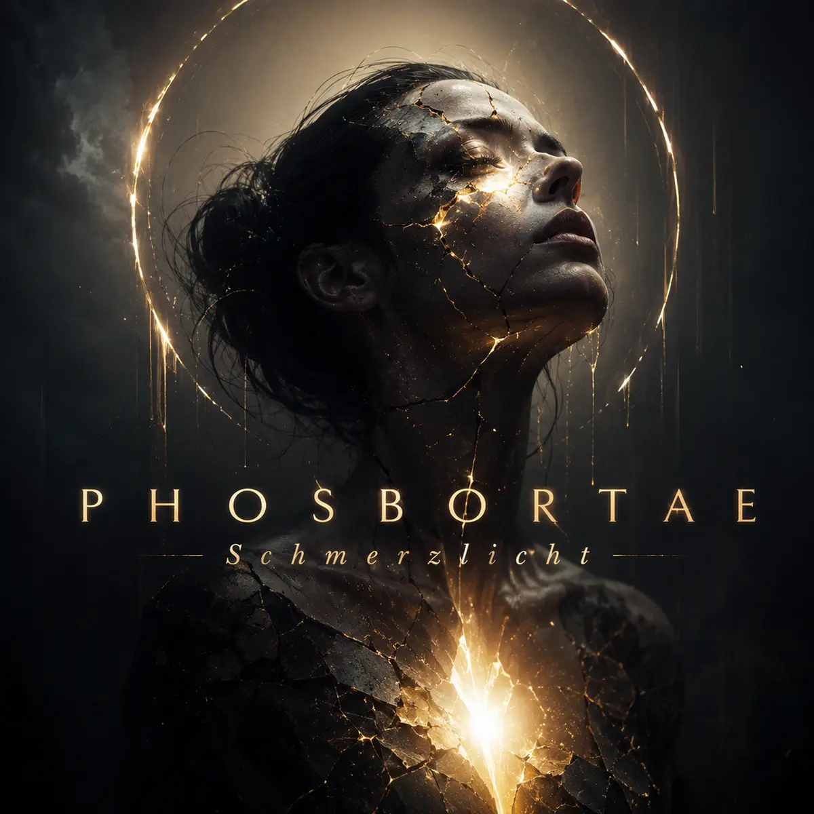
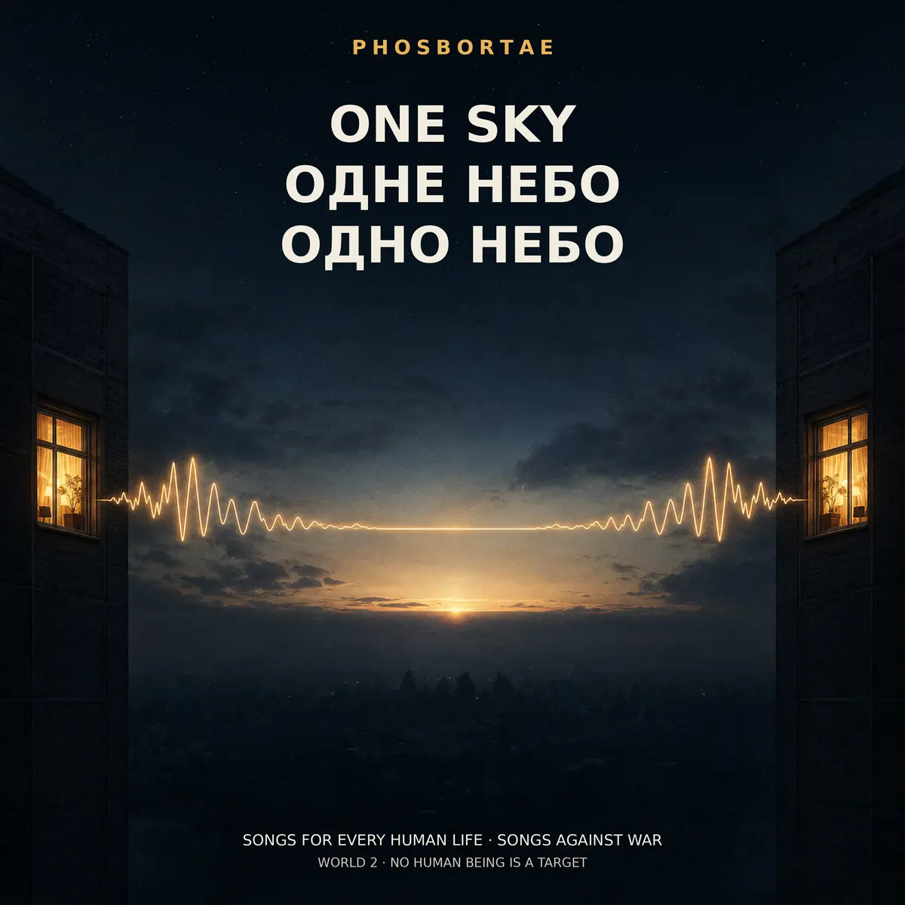

PHOSBORTAE
PHOSBORTAEMusik hören
Geschichten,
die weiterklingen.
Drei bereits verlinkte Alben führen direkt zu SoundCloud. Kein automatischer Start – du entscheidest, was du hören möchtest.

Lichtblick
Auf SoundCloud hören ↗
Lichtfrequenz
Auf SoundCloud hören ↗
Schmerzlicht
Auf SoundCloud hören ↗
ONE SKY · Kein Mensch ist ein Ziel
Für jedes
Menschenleben.
Ein künstlerischer Arbeitsbereich gegen Krieg und für die Würde jedes Menschen. Einzelne neue Werke werden hier erst nach ihrer eigenen Auswahl und Freigabe verlinkt.
Projektprofil auf SoundCloud öffnen ↗Vom Werk zum eigenen Beitrag
Was möchtest du daraus machen?
Eine eigene Stimme beitragen, ein Vorhaben mitgestalten oder zunächst persönlich anknüpfen: Du entscheidest, wo du beginnst.
Deinen nächsten Schritt finden →